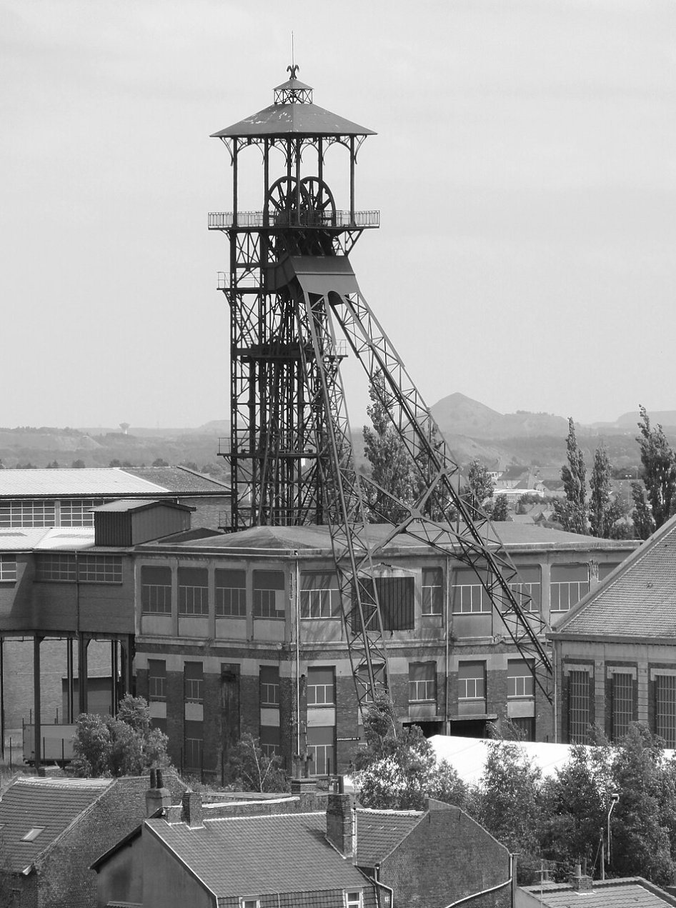
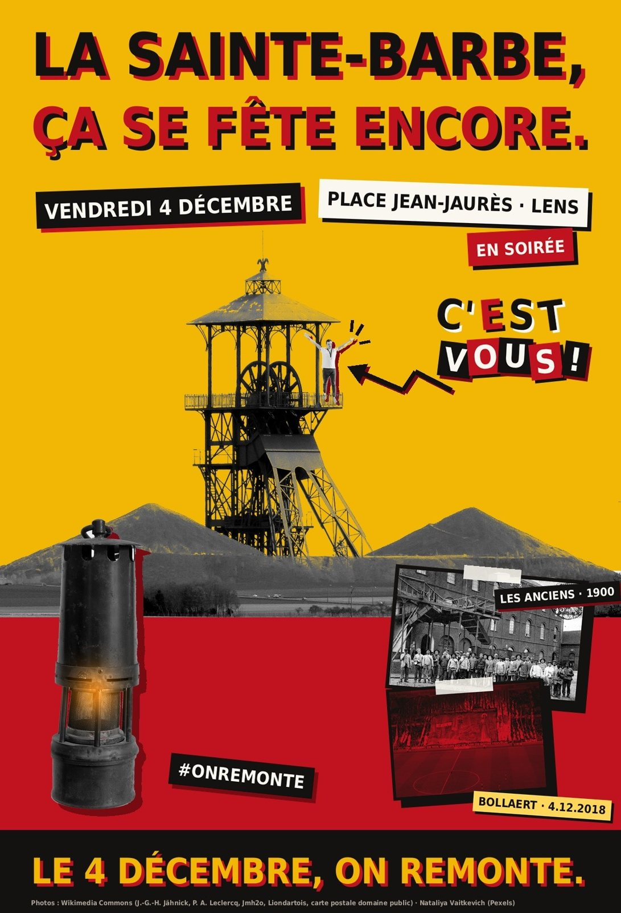
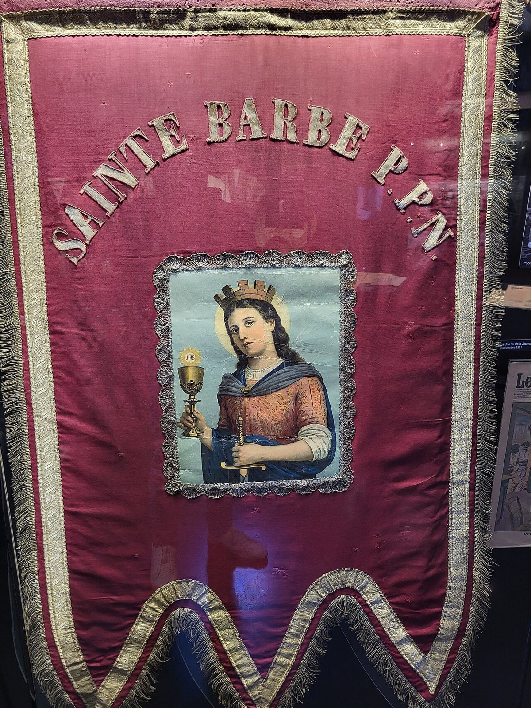
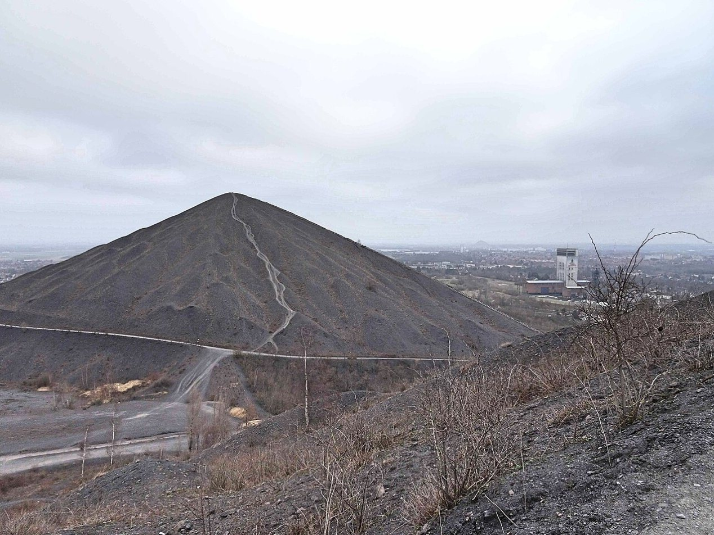

Vendredi 4 décembrePlace Jean-Jaurès · Lens · en soiréeJ-00


Affiche abribus · 120 x 176 cm
Le 4 décembre, on remonte · Place Jean-Jaurès, Lens · Sainte-Barbe 2026 · En soirée · Pour les 15-25 ans et leurs anciens · Le 4 décembre, on remonte · Place Jean-Jaurès, Lens · Sainte-Barbe 2026 · En soirée · Pour les 15-25 ans et leurs anciens · Le 4 décembre, on remonte · Place Jean-Jaurès, Lens · Sainte-Barbe 2026 · En soirée · Pour les 15-25 ans et leurs anciens · Le 4 décembre, on remonte · Place Jean-Jaurès, Lens · Sainte-Barbe 2026 · En soirée · Pour les 15-25 ans et leurs anciens ·
01 · La commande
Faire revenir les jeunes à la Sainte-Barbe
Le constat
Dans le Bassin minier, tout le monde connaît la Sainte-Barbe. Mais pour beaucoup de 15-25 ans, c'est une fête « de grands-parents ».
La mission de Candice
Moderniser la fête et donner envie aux jeunes d'y aller, sans perdre ceux qui y vont déjà.
Fosse 11/19, Loos-en-Gohelle
Cœur de cible
15-25 ans
Du Bassin minier, attirés par l'histoire, le territoire et le sport.
Cible secondaire
Les anciens
Et les familles de mineurs, qui font vivre la fête depuis toujours.
Typo sans empattement, formes géométriques sans arrondis
Pas d'image générée
La palette imposée
Noir#0E0D0C
Jaune#F5C31A
Orange#EF7D1A
Rouge#D8261D
Pas de bleu, demandé par Candice.
02 · Le concept
« Ça se fête encore »
Le nom
On a cherché un nom qui répond directement au cliché. Le mot « encore » dit que non, ce n'est pas fini : la Sainte-Barbe continue, et elle est aussi à eux.
La signature
« Le 4 décembre, on remonte. » reprend le vocabulaire de la mine, la remontée du fond, et donne en même temps un rendez-vous clair avec une date. Le nom de campagne a été validé par Candice le 13 octobre.
03 · L'affiche abribus
Celui qui remonte, c'est vous
Un format abribus vertical, pensé pour être lu en deux secondes depuis le trottoir. Toute la mémoire de la mine est là, en noir et blanc, mais avec les codes visuels que les jeunes voient tous les jours sur les réseaux.
1Les lieux imposésLe chevalement du 11/19, les terrils jumeaux, la lampe de mineur et une carte postale de mineurs vers 1900.
2Le pont avec les jeunesLe tifo Sainte-Barbe de Bollaert, des stickers, des ombres franches et un effet collage.
3Le messageEn haut du chevalement, un jeune bras levés et un « C'est vous ! » : celui qui remonte aujourd'hui, c'est le public.
4L'info pratiqueLa date et le lieu en très grand, en haut de l'affiche.
120 x 176 cmPhotos N&BJaune · rouge · orange
04 · Les vidéos
Des mineurs d'hier à Bollaert
Le fil de la vidéo : on part des mineurs d'avant, on montre que les lieux sont toujours là, puis que la fête vit encore, jusque dans les tribunes de Bollaert, et on finit sur le rendez-vous. Le tout en motion design, avec des photos d'archives libres de droits et la voix off de Gabin.
Version 16:9 · environ 1 minPour YouTube et Facebook, là où sont les familles et les anciens.
Version 9:16 · réseauxPour Instagram et TikTok. Les plans sont repensés pour le téléphone et les sous-titres sont incrustés, parce que la plupart des gens regardent sans le son.
05 · La stratégie de communication
Trois semaines pour remplir la place
Objectif : donner envie aux 15-25 ans de venir le 4 décembre, sans perdre le public qui y va déjà. Candice nous avait donné un plan de communication en recommandation : on l'a gardé comme base et adapté à nos trois supports.
5 000
vues cumulées sur la vidéo verticale (Instagram et TikTok)
150
« je viens » sur l'événement en ligne et le sondage en story
3 sem.
de campagne, du teaser à J-21 jusqu'au bilan à J+3
Des objectifs volontairement réalistes : on part de zéro abonné, sans budget publicitaire. Si un relais important partage la vidéo (mairie, club, média local), on les revoit à la hausse.
Deux cibles, deux messages
15-25 ans
Anciens et familles
Message
C'est une fête, c'est chez nous, viens.
La tradition continue, et les jeunes s'y mettent.
Ton
Direct, rythmé, fier
Respectueux, chaleureux
Support clé
Vidéo verticale
Affiche abribus, vidéo 1 min sur Facebook
Les canaux
Pour les 15-25 ans
Instagram et TikTok : vidéo verticale, stories avec compte à rebours, sondage « tu viens ? »
Lycées, IUT et associations étudiantes : relais par les BDE et les CDI
Communauté du RC Lens : groupes de supporters et comptes fans, sûrement le relais le plus efficace
Pour les anciens et les familles
Affichage abribus près du lieu de la fête et dans les cités
Facebook : vidéo 1 min sur les pages de la mairie, des associations d'anciens mineurs et des groupes locaux
Relais locaux : mairie, Centre historique minier de Lewarde, associations, presse locale
Le calendrier
J-21
Teaser
Photos d'archives en story, sans dire de quoi il s'agit.
J-14
Lancement
Sortie des deux vidéos, pose des affiches, envoi aux relais.
J-10
Relance
Extraits, avant/après des lieux, sondage « tu viens ? ».
J-3
Rappel
Compte à rebours, infos pratiques : lieu, heure, programme.
Jour J
4 décembre
Stories en direct, repartage des photos du public.
J+3
Bilan
Remerciements et relevé des deux indicateurs.
Les risques de la campagne
Risque
Ce qu'on fait
La vidéo ne décolle pas sur les réseaux
On s'appuie sur les relais (club, lycées, mairie) plutôt que sur nos propres comptes.
Les anciens trouvent la campagne trop « jeune »
Les archives et le vocabulaire de la mine restent au cœur des visuels, validés par Candice avant diffusion.
Droits sur les photos
Uniquement des photos libres de droits, avec la liste des sources.
0 €
L'impression et la pose des affiches abribus seraient à voir avec la mairie ou l'organisateur. Si un petit budget se libère, le plus utile serait de sponsoriser la vidéo verticale sur Instagram autour de Lens, entre J-14 et J-3.
06 · Fiche produit
La Sainte-Barbe en bref
DateLe 4 décembre, chaque année
OùLes communes du Bassin minier. Pour la campagne : place Jean-Jaurès à Lens, en soirée
Pour quiLes anciens, les familles de mineurs, les pompiers, et tous ceux qui gardent cette mémoire
StatutTradition vivante, sur un territoire inscrit à l'UNESCO depuis 2012
D'où vient sainte Barbe
D'après la légende, Barbe serait née au IIIe siècle. Enfermée dans une tour par son père, elle se convertit au christianisme. Son père la livre au juge, puis la décapite lui-même, avant d'être frappé par la foudre.
C'est cette foudre qui explique tout : Barbe devient la sainte qui protège du feu et de « tout ce qui tonne et détonne ». Les mineurs l'adoptent au XVIIIe siècle contre les coups de grisou, tout comme les pompiers et les artificiers.

Bannière de sainte Barbe, Centre historique minier de Lewarde. Photo : Sartel, CC BY-SA 4.0.
Comment les mineurs la fêtaient
La quinzaine Sainte-Barbe. Des « longues coupes » de 12 à 16 heures, du 16 au 30 novembre, pour payer la fête.
La statue. Installée à l'entrée de la fosse ou au fond, dans les galeries.
Le 4 décembre. Journée chômée et payée depuis 1946, cérémonie, procession puis banquet.
Les médailles et les colis. Pour les années de service, les malades et les retraités.
La fête en famille. Repas, chants, cartes postales, souvent autour d'une tarte au libouli.
Chevalement de la fosse 11/19, Loos-en-Gohelle. Photo : Jérémy-Günther-Heinz Jähnick, CC BY-SA 3.0.
Et aujourd'hui
L'exploitation du charbon s'arrête en 1990, mais la Sainte-Barbe continue : messes, défilés, harmonies et repas entre anciens. Le Bassin minier est inscrit au patrimoine mondial de l'UNESCO depuis 2012, et le RC Lens fait le lien chaque année avec un maillot spécial Sainte-Barbe.
Pourquoi maintenant : les derniers mineurs vieillissent, et la plupart des 15-25 ans ont un grand-père ou un arrière-grand-père qui a travaillé à la mine. Il manque juste une communication qui leur parle.

Les terrils de la fosse 11/19, Loos-en-Gohelle. Photo : Pierre André Leclercq, CC BY-SA 4.0.
07 · Gestion de projet
Deux personnes, un seul outil, zéro flou
Trois règles simples : un seul outil de suivi (Notion), un responsable par tâche, et tout ce qui est décidé avec Candice est écrit, avec la date.
Lenny
Direction visuelle · rédaction · motion
Affiche abribus, fiche produit, stratégie de com, animation et montage des deux vidéos.
Gabin
Contenu vidéo · photos · voix
Banque de photos et sources, script et storyboard, voix off posée sur les deux vidéos.
Les deux
Relation commanditaire
Analyse du cahier des charges, échanges avec Candice, oral final.
Les tâches et la charge
Analyse du CDC2 h
Fiche produit3 h
Stratégie de com2 h 30
Photos et sources4 h 30
Script, storyboard4 h
Affiche abribus3 h
Animation, montage4 h
Voix off4 h
Oral et rendu2 h
LennyGabinLes deux
29 h
de travail au total, soit environ 12 h 30 chacun, plus 4 h faites ensemble.
On avait prévu Trello, on est passés sur Notion : on l'utilise déjà tous les deux et on peut y regrouper la commande, les tâches et les sources des photos. Candice a validé ce choix le 13/10.
Le planning
Quand
Ce qu'on fait
17 au 21 sept.
Réception du cahier des charges, analyse, questions à Candice
24 sept.
Réponse de Candice, V2 du cahier des charges, critères validés
9 oct.
Répartition des rôles, Notion, choix des photos libres de droits
12-13 oct.
Fiche produit, stratégie de com, méthode de gestion. Validation du nom de campagne par Candice
13-14 oct.
Photos et storyboard (Gabin), affiche puis animation et montage des deux formats (Lenny)
Après le montage
Voix off enregistrée et calée sur les deux vidéos (Gabin)
Avant l'oral
Relecture, export, dépôt
Le projet était prévu sur 6 séances avec un point intermédiaire en séance 3. La séance 3 a été supprimée et l'oral avancé : on a resserré le planning en gardant les trois supports.
Les risques du projet
Risque
Score
Ce qu'on fait
Manque de temps, l'oral a été avancé
9
On garde les 3 supports mais on simplifie : une seule animation déclinée en vertical
Pas de photos du lieu réel à temps
6
Photos libres de droits des terrils et chevalements, lieu exact demandé à Candice
Candice ne valide pas le nom de campagne
4
Demandé tôt, avec une deuxième idée prête. Validé le 13/10
Un de nous deux est indisponible
3
Tout est dans le Notion, l'autre peut reprendre
Problème de droits sur une photo
2
Uniquement des photos libres, avec la source notée
Score = probabilité (1 à 3) x impact (1 à 3).
Le tableau des sources photos
Toutes les images de la vidéo et de l'affiche sont libres de droits. Chaque ligne renvoie vers la page d'origine, avec l'auteur et la licence.